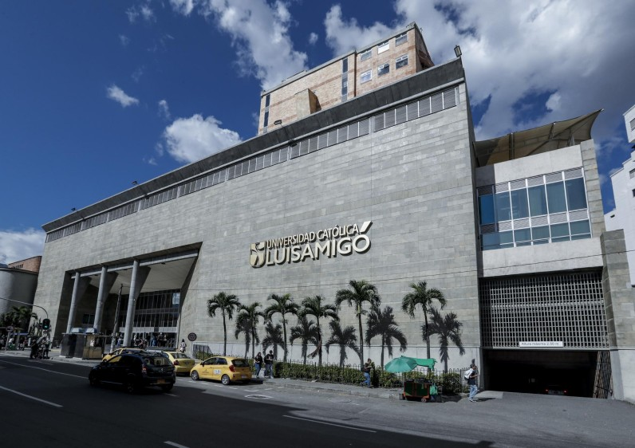

Hola,mi nombre es Mariana Duque Muñoz y en este blog les vengo hablar
sobre lo que hare al graduarme del colegio, la carrera universitaria que
quiero estudiar y mi interés por ella.
Lo primero que quiero hacer despues de salir del colegio es tomarme
savatico,para asi empezar a trabajar y empezar acomprarme las cosas que me
gustan por mi propia cuenta,despues de este año savatico quiero entrar a
la "Universidad Católica Luis Amigó" y estudiar "Comunicacion Social"

Mi interes por esta carrera en primer lugar es porque me sirve para poder
trabajar en la empresa familiar y porque en realidad es una carrera donde
se implementa mucho la expresion corporal